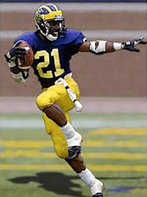
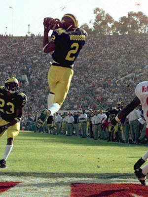
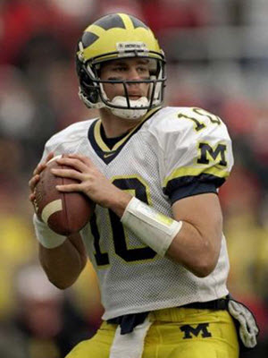
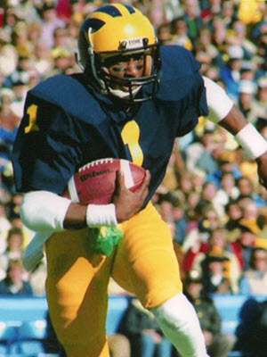
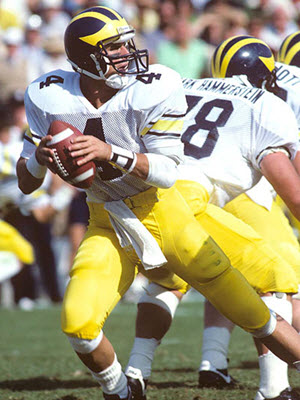

Desmond Howard won the Heisman Trophy in 1991 and was inducted into the College Football Hall of Fame in 2011.

Charles Woodson led the Wolverines to a national championship in 1997. He is the only defensive player to have won the Heisman Trophy.

Tom Brady led the Wolverines in 1998 and 1999 and became known as the "Comeback Kid."

Anthony Carter held nearly every Michigan receiving and return record when he graduated in 1982.

John Harbaugh was the Wolverines' starting quarterback from 1984-1986, and returned as head coach in 2015.